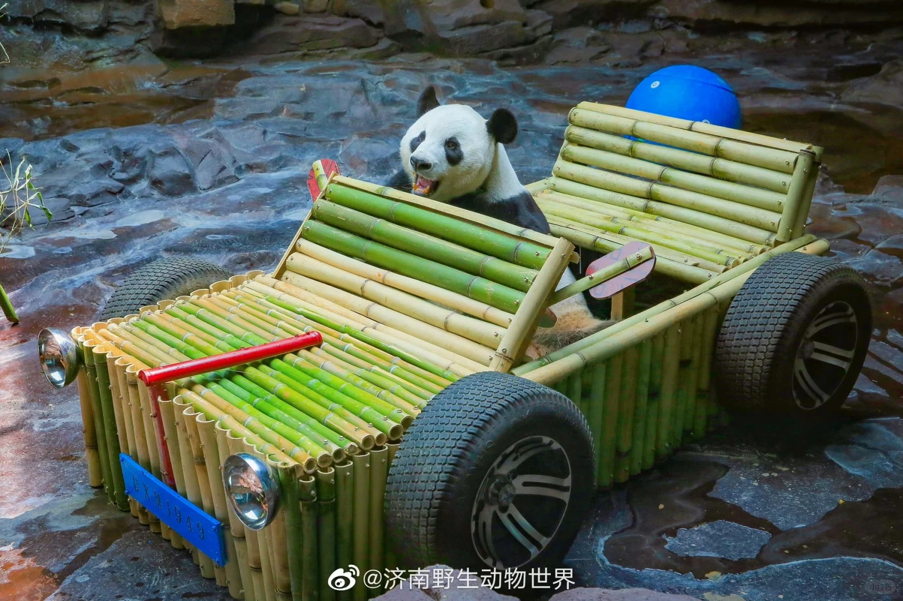
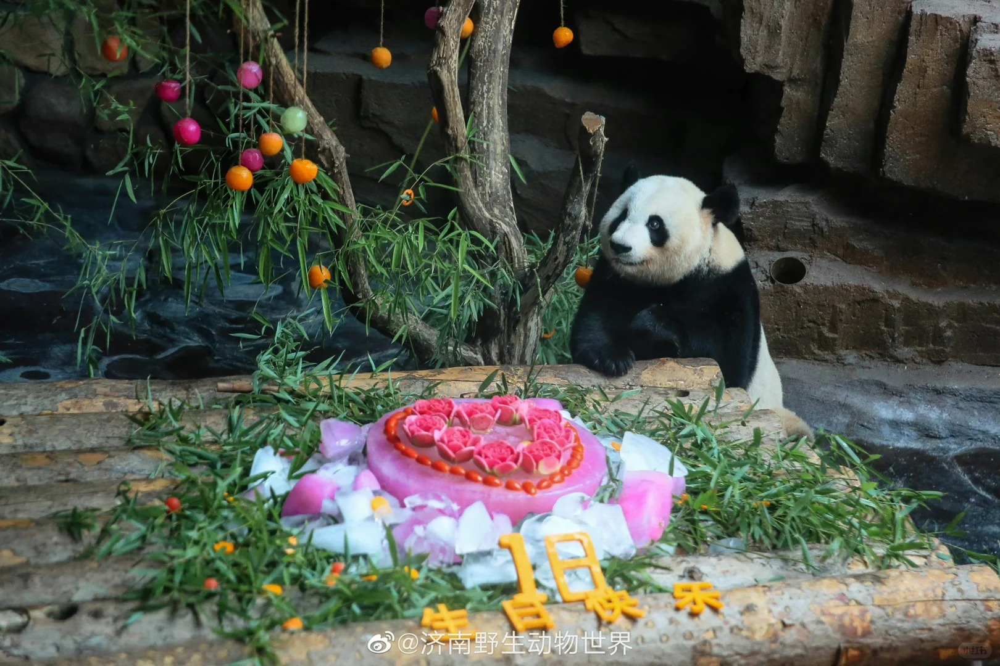
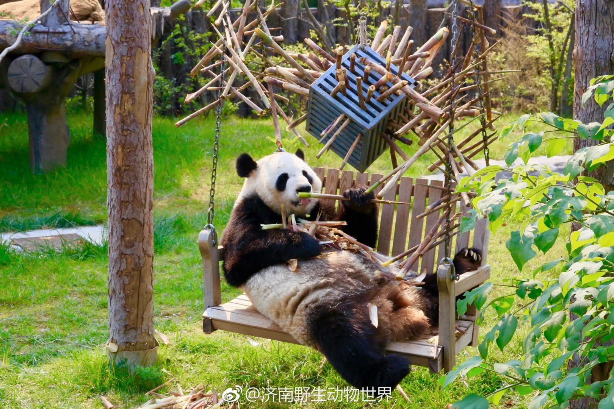
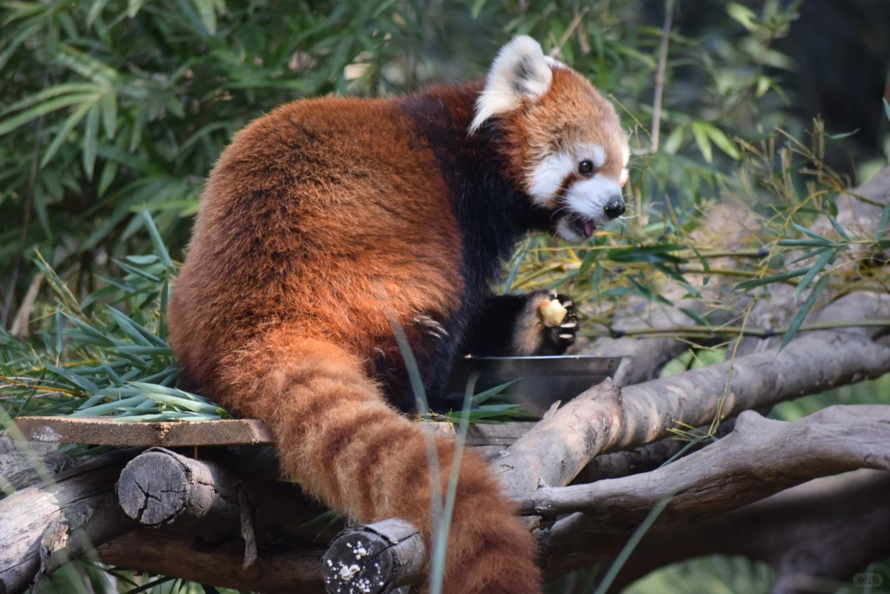
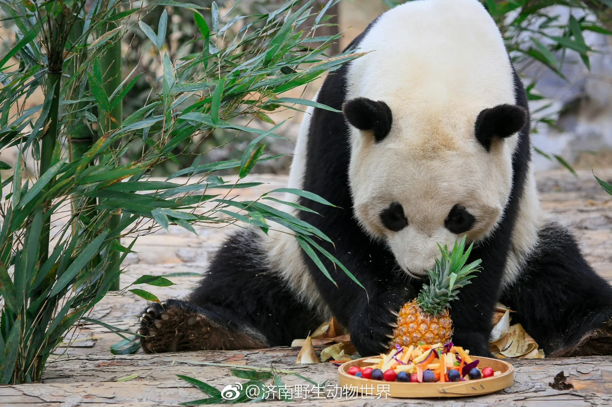

新能源汽车品牌与畅销车型
大熊猫地图
熊猫外交:作为中国的国宝，大熊猫为发展对外友好关系作出了不可磨灭的贡献。 ”熊��外交“最早可追溯���唐朝，武则天赠给日本天武天皇2只“白熊”和70张毛皮。这里的”白熊“即为如今的大熊猫。1972年2月，美国总统尼克松来中国访问，周恩来总理宣布赠送给美国人民的一件隆重的国礼，这就是来自四川省宝兴县的大熊猫“玲玲”和“兴兴”，自此开启了中美外交上的一段蜜月时光。从1957年到1982年的26年间，中国一共赠送给9个国家23只大熊猫。是中国在向境外赠送或租借大熊猫借以增进友好关系的外交方式。然而，过度的”熊猫热潮“导致了盗猎等违法现象的猖獗，因此在二十世纪八十年代，出于对濒危动物的保护需要，我国取消了向国外无偿赠送大熊猫，而是采用短期出国巡展的方式，将大熊猫送往世界。从1994年开始，为了解决大熊猫出国带来的种种问题，更好地保护大熊猫，我国以科研合作的方式送大熊猫出国，在向外界表达友好的同时，联合全球的力量共同保大熊猫这一宝贵的生物。
野生大熊猫分布及数量变化:2015年2月初发布的《全国第四次大熊猫调查报告》显示，截至2013年年底，全国野生大熊猫种群数量达1864只，野生大熊猫栖息地面积为258万公顷，分布在四川、陕西、甘肃三省的17个市（州）、49个县（市、区）、196个乡镇。与前三次调查结果相比，大熊猫野生种群数量稳定增长，栖息地范围明显扩大（注：第一次调查报告中不含栖息地面积信息），这表明大熊猫保护工作取得了一定的成效。但是，野生大熊猫种群数量仍未达到第一次调查报告时的2459只，因此，我们仍需采取进一步的措施，全面提升大熊猫保护管理水平，为维护生物多样性、建设生态文明和美丽中国贡献力量。
圈养大熊猫分布: 据《全国第四次大熊猫调查报告》中《第九章 圈养大熊猫种群状况》可知，截至2013年12月，全国圈养大熊猫共计375只，其中雄性166只，雌性209只。大熊猫圈养种群分布在11个繁育单位，其中中国保护大熊猫研究中心、成都大熊猫繁育研究基地两个繁育单位的大熊猫种群数量为321只，占全国圈养种群总数的85.6%，是我国大熊猫圈养种群的主体。到了2024年，全球圈养大熊猫种群数量以及能够达到728只，这体现了大熊猫人工繁育技术的飞速发展，有利于大熊猫圈养种群的自我维持和健康发展。
大熊猫的伴生动植物
伴生植物:伴生植物是指与大熊猫在同一生态环境中生长、分布，并且与大熊猫的生存、繁衍等活动有密切关系的植物种类。具体来说，这些伴生植物在大熊猫的栖息地内广泛存在，不仅为大熊猫提供了丰富的食物来源，还构成了大熊猫栖息地的生态系统，对大熊猫的生存环境和生态平衡起着重要的作用。通过5个植被组型下的16个植被型在四川、甘肃、陕西3个省及秦岭、岷山、邛崃山、大/小相岭及凉山6个山系的分布面积了解不同地区的大熊猫生长环境差异性。
伴生动物:与大熊猫同域分布的主要大中型兽类和雉类63种，分布在四川、陕西、甘肃三个省。其中国家I级保护野生动物16种，国家II级保护野生动物25种。通过调查与其有竟食关系或会攻击大熊猫的物种进行大熊猫生存环境评估。
主食竹介绍：全国第四次大熊猫调查表明，大熊猫栖息地共有8属竹种分布。大熊猫分布区竹种多样，可替代性强，现有的主食竹资源能确保大熊猫生存的食物需求。
丰容：动物丰容，是以改善圈养动物的生活环境、提高生活质量及动物福利为目的的工作，通过布置动物的生长圈养环境以达到改善动物心理状况，提高动物身体素质的目的。主要分为6种：环境丰容，感官丰容；认知丰容；社群丰容；食物丰容。

环境丰容

感官丰容

认知丰容

社群丰容

食物丰容